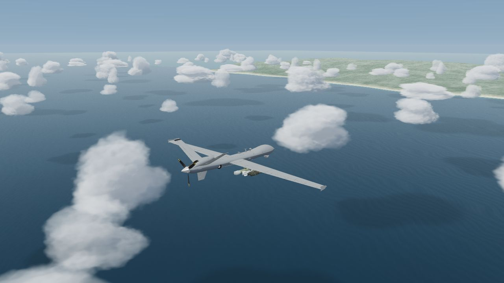

01 / A KNOWN STARTLeave the runway.
Leave the runway.
Keep a reference.
Take off from the coast and climb above scattered maritime clouds. GPS provides an external position reference as the coastline recedes.
MAGNETIC NAVIGATION / ROADMAP
The sky looks the same.
Your position estimate may not.
Explore how quantum magnetic sensing can provide an external reference when GPS is unavailable — and help reduce the drift that builds inside inertial navigation.

02 / THE PRINCIPLE
MagNav aids the position estimate. It does not move the aircraft back onto a line or make uncertainty disappear.
A quantum magnetic sensor measures the field along the flight. A sequence of observations contains more position information than a single reading.
The observed pattern is compared with a prepared magnetic map. Distinctive patterns help narrow down the possible location.
The magnetic reference can help correct INS estimates. Accuracy depends on map quality, sensor measurements, and magnetic interference.
This experience uses a fictional flight, magnetic map, and enlarged drift to explain the principle. It is not a measurement of MAEGNAS or aircraft performance. The GPS outage represents signal interference; clouds only obscure visual landmarks.
AIR / NEXT STEPS